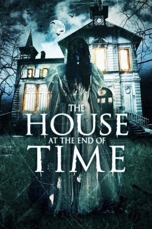

#2889 The House at the End of Time
 
 IMDB-Wertung: 6.8 / 10
IMDB-Wertung: 6.8 / 10  Metascore: 0
Metascore: 0 
Dulce (Ruddy Rodríguez) lebt mit ihren zwei Söhnen Leopoldo (Rosmel Bustamante) und Rodrigo (Hector Mercado) sowie ihrem Mann Juan José (Gonzalo Cubero) in einem großen, alten Haus. Eines Tages hat sie dort plötzlich eine übernatürliche Begegnung mit einer geheimnisvollen Erscheinung, die sie davor warnt, dass Juan José in nicht allzu ferner Zukunft ihre Kinder umbringen wird. Wenig später wird diese düstere Prophezeiung tatsächlich zur schrecklichen Realität. Doch auch ihr Mann selbst wird ermordet aufgefunden. Dulce wird daraufhin verhaftet und erst 30 Jahre später wieder freigelassen. Nach ihrer Entlassung kehrt die nun gealterte Frau zu dem mysteriösen Haus zurück, um den Geheimnissen und Tragödien der Vergangenheit, die sie so lange geplagt haben, endlich auf den Grund zu gehen und Erlösung zu erlangen...
Jahr: 2013
Dauer: 100 Minuten
FSK: 16
Land: Venezuela Studio: RedRumTonspuren:
Untertitel:
Auflösung: 1080p (1920x1080) Größe: 5314 MB
Genre: Thriller, Horror, Drama, Mystery
Regisseur: Alejandro Hidalgo
Drehbuch: Alejandro Hidalgo, Alejandro Hidalgo, Frank Baiz Quevedo
Soundtrack: Yoncarlos Medina
Darsteller:
- Rosmel Bustamante als Leopoldo
- Adriana Calzadilla als Vidente Adriana
- Simona Chirinos als Madame Victoria
- Gonzalo Cubero als Juan José
- Alexander Da Silva als
- Miguel Flores als Inspector
- Guillermo García als Priest
- Amanda Key als
- José León als Old Man
- Guillermo Londoño als
- Héctor Mercado als Rodrigo
- Yucemar Morales als Saraí
- Ruddy Rodríguez als Dulce
- Efraín Romero als Mario
Datei: X:\2013(G-H)\House at the End of Time, The (2013, FSK16, 1920x1080).mkv seit 29.12.2015
Festplatte: HD 2012(N-Z)-2013(A-H)
 Es gibt insgesamt 43 Filme in der Gruppe '2013(G-H)'
Es gibt insgesamt 43 Filme in der Gruppe '2013(G-H)'